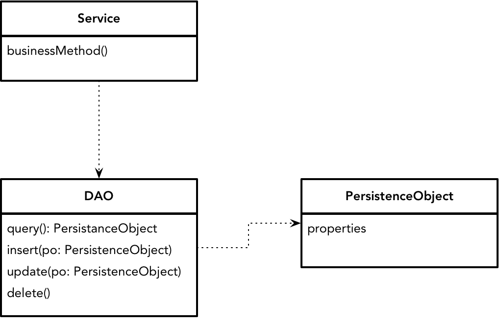
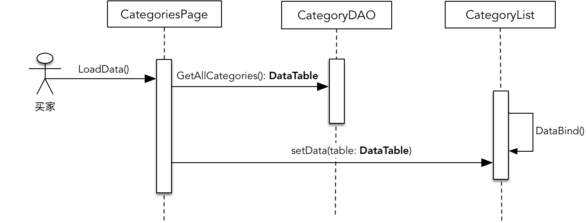
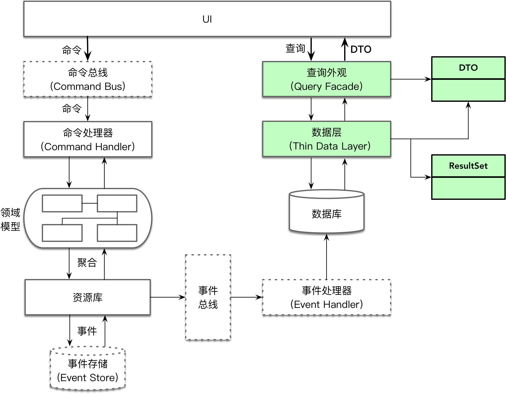

- 001 「战略篇」访谈 DDD 和微服务是什么关系？.md.html
- 002 「战略篇」开篇词：领域驱动设计，重焕青春的设计经典.md.html
- 003 领域驱动设计概览.md.html
- 004 深入分析软件的复杂度.md.html
- 005 控制软件复杂度的原则.md.html
- 006 领域驱动设计对软件复杂度的应对（上）.md.html
- 007 领域驱动设计对软件复杂度的应对（下）.md.html
- 008 软件开发团队的沟通与协作.md.html
- 009 运用领域场景分析提炼领域知识（上）.md.html
- 010 运用领域场景分析提炼领域知识（下）.md.html
- 011 建立统一语言.md.html
- 012 理解限界上下文.md.html
- 013 限界上下文的控制力（上）.md.html
- 014 限界上下文的控制力（下）.md.html
- 015 识别限界上下文（上）.md.html
- 016 识别限界上下文（下）.md.html
- 017 理解上下文映射.md.html
- 018 上下文映射的团队协作模式.md.html
- 019 上下文映射的通信集成模式.md.html
- 020 辨别限界上下文的协作关系（上）.md.html
- 021 辨别限界上下文的协作关系（下）.md.html
- 022 认识分层架构.md.html
- 023 分层架构的演化.md.html
- 024 领域驱动架构的演进.md.html
- 025 案例 层次的职责与协作关系（图文篇）.md.html
- 026 限界上下文与架构.md.html
- 027 限界上下文对架构的影响.md.html
- 028 领域驱动设计的代码模型.md.html
- 029 代码模型的架构决策.md.html
- 030 实践 先启阶段的需求分析.md.html
- 031 实践 先启阶段的领域场景分析（上）.md.html
- 032 实践 先启阶段的领域场景分析（下）.md.html
- 033 实践 识别限界上下文.md.html
- 034 实践 确定限界上下文的协作关系.md.html
- 035 实践 EAS 的整体架构.md.html
- 036 「战术篇」访谈：DDD 能帮开发团队提高设计水平吗？.md.html
- 037 「战术篇」开篇词：领域驱动设计的不确定性.md.html
- 038 什么是模型.md.html
- 039 数据分析模型.md.html
- 040 数据设计模型.md.html
- 041 数据模型与对象模型.md.html
- 042 数据实现模型.md.html
- 043 案例 培训管理系统.md.html
- 044 服务资源模型.md.html
- 045 服务行为模型.md.html
- 046 服务设计模型.md.html
- 047 领域模型驱动设计.md.html
- 048 领域实现模型.md.html
- 049 理解领域模型.md.html
- 050 领域模型与结构范式.md.html
- 051 领域模型与对象范式（上）.md.html
- 052 领域模型与对象范式（中）.md.html
- 053 领域模型与对象范式（下）.md.html
- 054 领域模型与函数范式.md.html
- 055 领域驱动分层架构与对象模型.md.html
- 056 统一语言与领域分析模型.md.html
- 057 精炼领域分析模型.md.html
- 058 彩色 UML 与彩色建模.md.html
- 059 四色建模法.md.html
- 060 案例 订单核心流程的四色建模.md.html
- 061 事件风暴与业务全景探索.md.html
- 062 事件风暴与领域分析建模.md.html
- 063 案例 订单核心流程的事件风暴.md.html
- 064 表达领域设计模型.md.html
- 065 实体.md.html
- 066 值对象.md.html
- 067 对象图与聚合.md.html
- 068 聚合设计原则.md.html
- 069 聚合之间的关系.md.html
- 070 聚合的设计过程.md.html
- 071 案例 培训领域模型的聚合设计.md.html
- 072 领域模型对象的生命周期-工厂.md.html
- 073 领域模型对象的生命周期-资源库.md.html
- 074 领域服务.md.html
- 075 案例 领域设计模型的价值.md.html
- 076 应用服务.md.html
- 077 场景的设计驱动力.md.html
- 078 案例 薪资管理系统的场景驱动设计.md.html
- 079 场景驱动设计与 DCI 模式.md.html
- 080 领域事件.md.html
- 081 发布者—订阅者模式.md.html
- 082 事件溯源模式.md.html
- 083 测试优先的领域实现建模.md.html
- 084 深入理解简单设计.md.html
- 085 案例 薪资管理系统的测试驱动开发（上）.md.html
- 086 案例 薪资管理系统的测试驱动开发（下）.md.html
- 087 对象关系映射（上）.md.html
- 088 对象关系映射（下）.md.html
- 089 领域模型与数据模型.md.html
- 090 领域驱动设计对持久化的影响.md.html
- 091 领域驱动设计体系.md.html
- 092 子领域与限界上下文.md.html
- 093 限界上下文的边界与协作.md.html
- 094 限界上下文之间的分布式通信.md.html
- 095 命令查询职责分离.md.html
- 096 分布式柔性事务.md.html
- 097 设计概念的统一语言.md.html
- 098 模型对象.md.html
- 099 领域驱动设计参考过程模型.md.html
- 100 领域驱动设计的精髓.md.html
- 101 实践 员工上下文的领域建模.md.html
- 102 实践 考勤上下文的领域建模.md.html
- 103 实践 项目上下文的领域建模.md.html
- 104 实践 培训上下文的业务需求.md.html
- 105 实践 培训上下文的领域分析建模.md.html
- 106 实践 培训上下文的领域设计建模.md.html
- 107 实践 培训上下文的领域实现建模.md.html
- 108 实践 EAS 系统的代码模型.md.html
- 109 后记：如何学习领域驱动设计.md.html
040 数据设计模型
通过分析活动获得的数据项模型，可以认为是数据分析模型，它确定了系统的主要数据表、关系及表的主要属性。到了建模的设计活动，就可以继续细化数据项模型这个分析模型，例如丰富每个表的列属性，或者确定数据表的主键与外键，确定主键的唯一性策略，最后将数据表映射为类对象。
丰富数据分析模型
若要丰富每个表的列属性，除了继续挖掘业务需求，寻找可能错过的属性或辨别分配错误的属性之外，在设计阶段还需要进一步确定这些属性对应的数据列，包括考虑列的类型及宽度，并为每个表定义一个主键列，或者定义由多个列组成的联合主键。
设计主键的目的更多出于查询检索及维护数据表之间关系的要求，而非表达业务含义。即使主键与业务对象要求的唯一标识有关，但生成主键值的业务规则却在数据模型中无法体现，除非需求明确实体的身份标识就是自增长。
例如，订单表的主键为订单 ID，它会作为订单的订单号。为了客服处理订单的便利性，需要订单号在保持尽可能短的前提下，要能帮助客服人员理解，这就需要订单号尽量与当前业务相结合，如渠道编号（包括平台、下单渠道、支付方式）、业务类型和时间信息等组成订单号的编码规则。无疑，订单号的编码规则在数据模型中是无法体现出来的。
在设计活动中，还需要根据业务需求与数据表的特性确定表的索引和约束。同时，还应该根据实现的需要确定是否需要为多个数据表建立视图。索引和视图都有利于提高数据库的访问性能，视图还能保障数据访问的安全性，约束则有利于保证数据的正确性和一致性。毫无疑问，这些机制其实皆与具体的数据库实现机制有关，但在数据建模的设计活动中却又不可避免。如果数据设计模型没有确定索引、约束，并明确标记数据表和视图，就无法给实现模型带来指导和规范。
数据设计模型的构成
建立数据设计模型，最主要的设计活动还是将数据表映射为类对象，以此来满足业务实现。这个过程称之为对象与数据的映射（Object-Relation Mapping，ORM）。
由于数据建模是自下而上的过程，首先确定了数据表以及之间的关系，然后再由此建立与之对应的对象，因此一种简单直接的方法是建立与数据表完全一一对应的类模型。对象的类型即为数据表名，对象的属性即为数据表的列。这样的类在数据设计模型中，目的在于数据的传输，相当于 J2EE 核心模式中定义的传输对象（Transfer Object）。
当然从另一方面来看，由于它映射了数据库的数据表，因而又可以作为持久化的数据，即持久化对象（Persistence Object）。至于操作数据的业务行为，针对基于关系数据库进行的建模活动而言，由于关系数据表作为一种扁平的数据结构，操作和管理数据最为直接高效的方式是使用 SQL。我们甚至可以认为 SQL 就是操作关系型数据表的领域特定语言（Domain Specific Language，DSL）。因此，在数据模型驱动设计过程中，SQL 会成为操作数据的主力，甚至部分业务也由 SQL 或 SQL 组成的存储过程来完成。
为了处理数据的方便，还可以利用 SQL 封装数据处理的逻辑，然后建立一个视图，例如：
CREATE VIEW dbo.v_Forums_Forums
AS
SELECT dbo.Forums_Categories.CategoryID, dbo.Forums_Categories.CategoryName, dbo.Forums_Categories.CategoryImageUrl,
dbo.Forums_Categories.CategoryPosition, dbo.Forums_Forums.ForumID, dbo.Forums_Forums.ForumName, dbo.Forums_Forums.ForumDescription,
dbo.Forums_Forums.ForumPosition,
(SELECT COUNT(*)
FROM Forums_Topics
WHERE Forums_Topics.ForumID = Forums_Forums.ForumID) AS ForumTopics,
(SELECT COUNT(*)
FROM Forums_Topics
WHERE Forums_Topics.ForumID = Forums_Forums.ForumID) +
(SELECT COUNT(*)
FROM Forums_Replies
WHERE Forums_Replies.ForumID = Forums_Forums.ForumID) AS ForumPosts,
(SELECT MAX(AddedDate)
FROM (SELECT ForumID, AddedDate
FROM Forums_Topics
UNION ALL
SELECT ForumID, AddedDate
FROM Forums_Replies) AS dates
WHERE dates.ForumID = Forums_Forums.ForumID) AS ForumLastPostDate
FROM dbo.Forums_Categories INNER JOIN
dbo.Forums_Forums ON dbo.Forums_Categories.CategoryID = dbo.Forums_Forums.CategoryID
如上所示，创建视图的 SQL 语句封装了对论坛主题数、回复数等数据的统计业务逻辑。
显然，遵循职责分离的原则，数据设计模型主要包含三部分的职责：业务逻辑、数据访问及数据。映射为对象模型，就是与数据表一一对应并持有数据的持久化对象，封装了 SQL 数据访问逻辑的数据访问对象（Data Access Object，DAO），以及满足业务用例需求的服务对象。三者之间的关系如下图所示：

数据访问对象
数据访问对象属于 J2EE 核心模式中的一种，引入它的目的是封装数据访问及操作的逻辑，并分离持久化逻辑与业务逻辑，使得数据源可以独立于业务逻辑而变化。
《J2EE 核心模式》认为：“数据访问对象负责管理与数据源的连接，并通过此连接获取、存储数据。”一个典型的数据访问对象模式如下图所示：
图中的 Data 是一个传输对象，如果将该 Data 定义为表数据对象，它可以处理表中所有的行，如 RecordSet，或者由 ADO.NET 中的 IDataReader 提供类似数据库游标的访问能力，就相当于运用了《企业应用架构模式》中的表数据入口（Table Data Gateway）模式。如果 Data 是这里提及的代表领域概念的持久化对象，则需要引入 ResultSet 到 Data 之间的映射器，这时就可以运用数据映射器（Data Mapper）模式。如下所示：
public class Part {
private String name;
private String brand;
private double retailPrice;
}
public class PartMapper {
public List<Part> findAll() throws Exception {
Connection conn = null;
try {
Class.forName(DRIVER_CLASS);
conn = DriverManager.getConnection(DB_URL, USER, PASSWORD);
Statement stmt = c.createStatement();
ResultSet rs = stmt.executeQuery("select * from part");
List<Part> partList = new ArrayList<Part>();
while (rs.next()) {
Part p = new Part();
p.setName(rs.getString("name"));
p.setBrand(rs.getString("brand"));
p.setRetailPrice(rs.getDouble("retail_price"));
partList.add(p);
}
} catch(SQLException ex) {
throw new ApplicationException(ex);
} finally {
conn.close();
}
}
}
为了隔离数据库持久化逻辑，往往需要为数据访问对象定义接口，再以依赖注入的方式注入到服务对象中，保证数据源和数据访问逻辑的变化。如下接口定义就是数据访问对象的抽象：
public interface MovieDao {
Movie findById(String id);
List<Movie> findByYear(String year);
void delete(String id);
Movie create(String rating，String year，String title);
void update(String id，String rating，String year，String title);
}
持久化对象
在数据设计模型中，持久化对象可以作为数据的持有者传递给服务、数据访问对象甚至是 UI 控件。早期的开发框架流行为持有数据的对象定义一个通用的数据结构，同时为 UI 控件提供绑定该数据结构的能力。如 ADO.NET 框架就定义了 DataSet、DataTable 等数据结构，ASP.NET Web Form 则提供绑定这些数据结构的能力。例如，我们要显示商品的类别，在 Web 前端就定义了属于 System.Web.UI.Page 类型的 Web 页面 CategoriesPage，它与数据访问对象以及持久化对象的交互如下图所示：

图中的 DataTable 通过 CategoriesDAO 直接返回，它实际上是 ADO.NET 框架定义的通用类型。在一些 .NET 开发实践中，还可以定义强类型的 DataSet 或 DataTable，方法是定义一个代表业务概念的类，例如 Categories，让它派生自 DataTable 类。
随着轻量级容器的流行，越来越多的开发人员认识到持久化对象强依赖于框架带来的危害，POJO（Plain Old Java Object）和 POCO（Plain Old CLR Object）得到了大家的认可和重视。Martin Fowler 甚至将其称之为持久化透明（Persistence Ignorance，PI）的对象，用以形容这样的持久化对象与具体的持久化实现机制之间的隔离。理想状态下的持久化对象，不应该依赖于除开发语言平台之外的任何框架。
在《领域驱动设计与模式实战》一书中，Jimmy Nilsson 总结了如下特征，他认为这些特征违背了持久化透明的原则：
- 从特定的基类（Object 除外）进行继承
- 只通过提供的工厂进行实例化
- 使用专门提供的数据类型
- 实现特定接口
- 提供专门的构造方法
- 提供必需的特定字段
- 避免某些结构或强制使用某些结构
这些特征无一例外地都是外部框架对于持久化对象的一种侵入。在 Martin Fowler 总结的数据源架构模式中，活动记录（Active Record）模式明显违背了持久化透明的原则，但因为它的简单性，却被诸如 Ruby On Rails、jOOQ、scalikejdbc 之类的框架运用。活动记录模式封装了数据与数据访问行为，这就相当于将数据访问对象与持久化对象合并到了一个对象中。由于数据访问逻辑存在许多通用的逻辑，许多数据访问框架都定义了类似 ActiveRecord 这样的超类，由其实现公共的数据访问方法，Ruby On Rails 还充分利用了 Ruby 元编程特性提供了更多的代码简化。例如定义客户 Client 的活动记录：
class Client < ApplicationRecord
has_one :address
has_many :orders
has_and_belongs_to_many :roles
end
# invoke
client = Client.order(:first_name).first
Client 类继承了 ApplicationRecord 类，而框架通过 Ruby 的 missingMethod() 元数据编程和动态语言特性，使得调用者可以方便快捷地调用 order 与 first 等方法，完成对数据的访问。
使用 Scala 编写的 scalikejdbc 框架则利用代码生成器和组合方式来实现活动记录，例如 Report 类和伴生对象（companion object）的定义：
case class Report(
id: String,
name: Option[String] = None,
description: Option[String] = None,
status: String,
publishStatus: String,
createdAt: DateTime,
updatedAt: DateTime,
createdBy: String,
updatedBy: String,
metaData: String) {
def save()(implicit session: DBSession = Report.autoSession): Report = Report.save(this)(session)
def destroy()(implicit session: DBSession = Report.autoSession): Unit = Report.destroy(this)(session)
}
object Report extends SQLSyntaxSupport[Report] {
override val tableName = "reports"
override val columns = Seq("id", "name", "description", "status", "publish_status", "created_at", "updated_at", "created_by", "updated_by", "meta_data")
val r = Report.syntax("r")
override val autoSession = AutoSession
def find(id: String)(implicit session: DBSession = autoSession): Option[Report] = {
withSQL {
select.from(Report as r).where.eq(r.id, id)
}.map(Report(r.resultName)).single.apply()
}
def findAll()(implicit session: DBSession = autoSession): List[Report] = {
withSQL(select.from(Report as r)).map(Report(r.resultName)).list.apply()
}
def findBy(where: SQLSyntax)(implicit session: DBSession = autoSession): Option[Report] = {
withSQL {
select.from(Report as r).where.append(where)
}.map(Report(r.resultName)).single.apply()
}
}
类 Report 并没有继承任何类，但却利用 Scala 的隐式参数依赖了框架定义的 DBSession，然后通过 Report 的伴生对象去继承名为 SQLSyntaxSupport[T] 的特性，以及组合调用了 withSQL 对象。显然，活动记录在满足了快速编码与代码重用的同时，也带来了与数据访问框架的紧耦合。
当持久化对象被运用到 CQRS 模式中时，查询端通过查询外观直接访问一个薄的数据层，如下图右端所示：

这个薄的数据层通过数据访问对象结合 SQL 语句直接访问数据库，返回一个表数据记录 ResultSet，然后直接将其转换为 POJO 形式的数据传输对象（DTO）对象。这是因为查询端仅涉及到数据库的查询，因此并不需要持久化对象，至于添加、删除与修改则属于命令端，采用的是领域模型而非数据模型。
服务对象
由于持久化对象和数据访问对象都不包含业务逻辑，服务就成为了业务逻辑的唯一栖身之地。这时，持久化对象是数据的提供者，实现服务时就会非常自然地选择事务脚本（Transaction Script）模式。
《企业应用架构模式》对事务脚本的定义为：
使用过程来组织业务逻辑，每个过程处理来自表现层的单个请求。这是一种典型的过程式设计，每个服务功能都是一系列步骤的组合，从而形成一个完整的事务。注意，这里的事务代表一个完整的业务行为过程，而非保证数据一致性的事务概念。
例如为一个音乐网站提供添加好友功能，就可以分解为如下步骤：
- 确定用户是否已经是朋友
- 确定用户是否已被邀请
- 若未邀请，发送邀请信息
- 创建朋友邀请
采用事务脚本模式定义的服务如下所示：
public class FriendInvitationService {
public void inviteUserAsFriend(String ownerId, String friendId) {
try {
bool isFriend = friendshipDao.isExisted(ownerId, friendId);
if (isFriend) {
throw new FriendshipException(String.format("Friendship with user id %s is existed.", friendId));
}
bool beInvited = invitationDao.isExisted(ownerId, friendId);
if (beInvited) {
throw new FriendshipException(String.format("User with id %s had been invited.", friendId));
}
FriendInvitation invitation = new FriendInvitation();
invitation.setInviterId(ownerId);
invitation.setFriendId(friendId);
invitation.setInviteTime(DateTime.now());
User friend = userDao.findBy(friendId);
sendInvitation(invitation, friend.getEmail());
invitationDao.create(invitation);
} catch (SQLException ex) {
throw new ApplicationException(ex);
}
}
}
不要因为事务脚本采用面向过程设计就排斥这一模式，相较于对编程范式的偏执，我认为 Martin Fowler 在书中说的一句话更加公道：
“不管你是多么坚定的面向对象的信徒，也不要盲目排斥事务脚本。许多问题本身是简单的，一个简单的解决方案可以加快你的开发速度，而且运行起来也会更快。”
即使采用事务脚本，我们也可以通过提取方法来改进代码的可读性。每个方法都提供了一定的抽象层次，通过方法的提取就可以在一定程度上隐藏细节，保持合理的抽象层次。这种方式被 Kent Beck 总结为组合方法（Composed Method）模式：
- 把程序划分为方法，每个方法执行一个可识别的任务
- 让一个方法中的所有操作处于相同的抽象层
- 这会自然地产生包含许多小方法的程序，每个方法只包含少量代码
如上的 inviteUserAsFriend() 方法就可以重构为：
public class FriendInvitationService {
public void inviteUserAsFriend(String ownerId, String friendId) {
try {
validateFriend(ownerId, friendId);
FriendInvitation invitation = createFriendInvitation(ownerId, friendId);
sendInvitation(invitation, friendId);
invitationDao.create(invitation);
} catch (SQLException ex) {
throw new ApplicationException(ex);
}
}
}
在采用事务脚本时，同样需要考虑职责的分配，每个类应该围绕一个主题将相关的事务脚本组织在一起。为了更好地应对事务脚本的变化，可以考虑让一个事务脚本对应一个类，并通过识别事务脚本的共同特征，引入命令（Command）模式。例如推荐朋友事务脚本和推荐音乐事务脚本：
当然，无论对于事务脚本做出怎样的设计改进，只要不曾改变事务脚本的过程设计本质，一旦业务逻辑变得更加复杂时，就会变得捉襟见肘。Martin Fowler 就认为：
“当事物一旦变得那么复杂时，就很难使用事务脚本保持一个一致的设计。”
解释为何事务脚本较难处理复杂业务，牵涉到对结构编程范式和对象编程范式之间的讨论，我会在后面进行专题探讨，这里不再赘述。